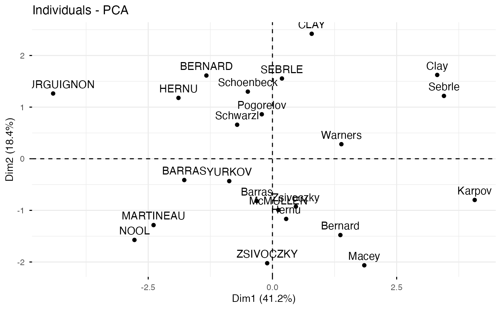
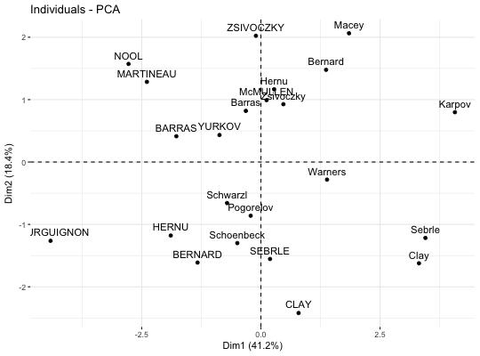
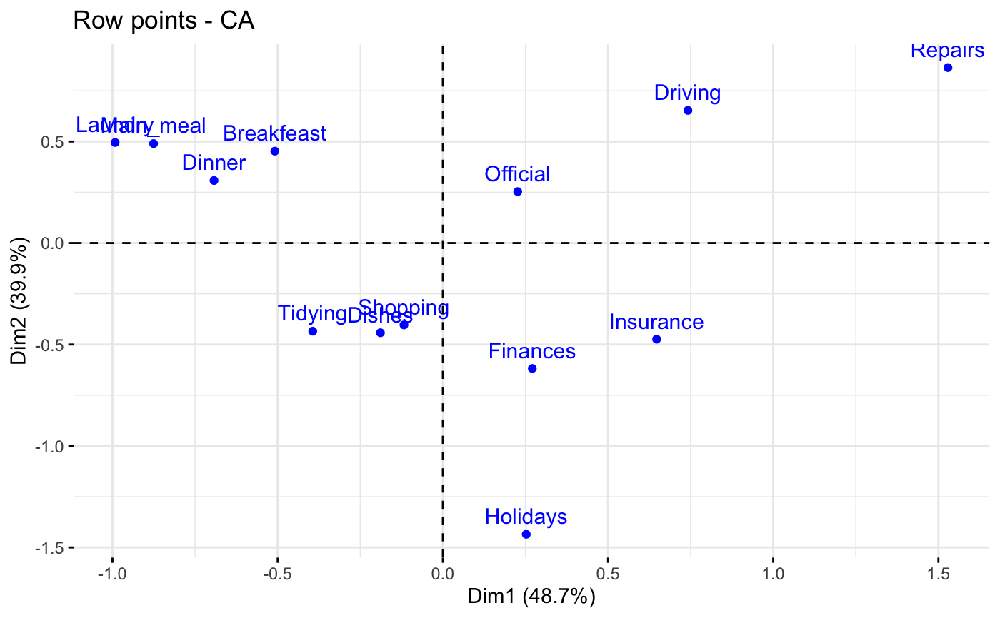
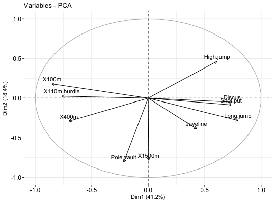
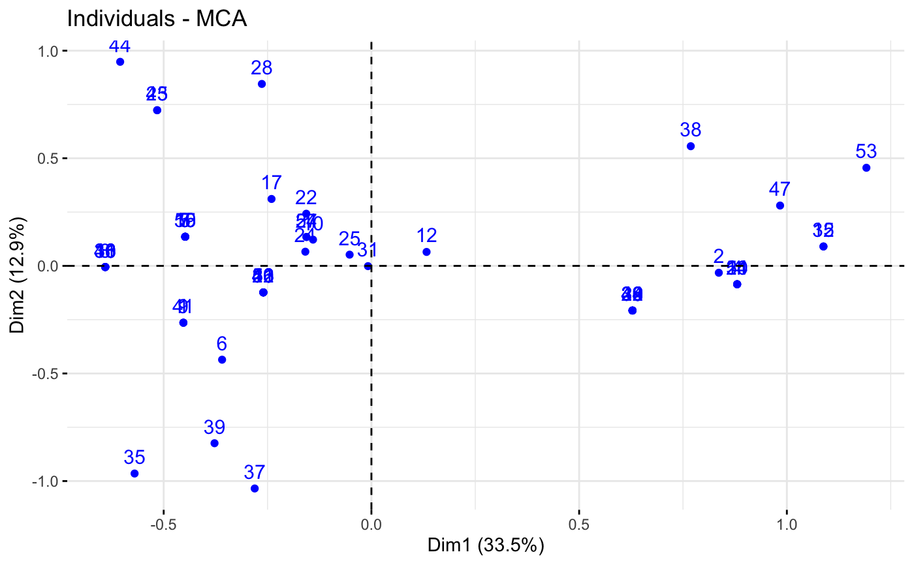
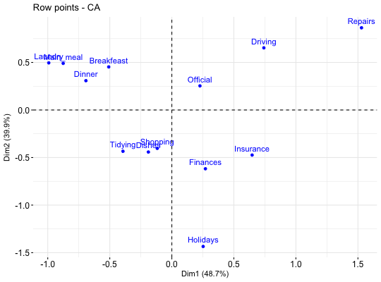

fviz.RdGeneric function to create a scatter plot of multivariate analyse outputs, including PCA, CA, MCA and MFA.
fviz(X, element, axes = c(1, 2), geom = "auto", label = "all", invisible = "none", labelsize = 4, pointsize = 1.5, pointshape = 19, arrowsize = 0.5, habillage = "none", addEllipses = FALSE, ellipse.level = 0.95, ellipse.type = "norm", ellipse.alpha = 0.1, mean.point = TRUE, color = "black", fill = "white", alpha = 1, gradient.cols = NULL, col.row.sup = "darkblue", col.col.sup = "darkred", select = list(name = NULL, cos2 = NULL, contrib = NULL), title = NULL, axes.linetype = "dashed", repel = FALSE, col.circle = "grey70", circlesize = 0.5, ggtheme = theme_minimal(), ggp = NULL, font.family = "", ...)
| X | an object of class PCA, CA, MCA, FAMD, MFA and HMFA [FactoMineR]; prcomp and princomp [stats]; dudi, pca, coa and acm [ade4]; ca [ca package]; expoOutput [ExPosition]. |
|---|---|
| element | the element to subset from the output. Possible values are "row" or "col" for CA; "var" or "ind" for PCA and MCA; "mca.cor" for MCA; 'quanti.var', 'quali.var' , 'group' or 'ind' for FAMD, MFA and HMFA. |
| axes | a numeric vector specifying the axes of interest. Default values are 1:2 for axes 1 and 2. |
| geom | a text specifying the geometry to be used for the graph. Default value is "auto". Allowed values are the combination of c("point", "arrow", "text"). Use "point" (to show only points); "text" to show only labels; c("point", "text") or c("arrow", "text") to show both types. |
| label | a text specifying the elements to be labelled. Default value is "all". Allowed values are "none" or the combination of c("ind", "ind.sup", "quali", "var", "quanti.sup", "group.sup"). "ind" can be used to label only active individuals. "ind.sup" is for supplementary individuals. "quali" is for supplementary qualitative variables. "var" is for active variables. "quanti.sup" is for quantitative supplementary variables. |
| invisible | a text specifying the elements to be hidden on the plot. Default value is "none". Allowed values are the combination of c("ind", "ind.sup", "quali", "var", "quanti.sup", "group.sup"). |
| labelsize | font size for the labels |
| pointsize | the size of points |
| pointshape | the shape of points |
| arrowsize | the size of arrows. Controls the thickness of arrows. |
| habillage | an optional factor variable for coloring the observations by groups. Default value is "none". If X is a PCA object from FactoMineR package, habillage can also specify the supplementary qualitative variable (by its index or name) to be used for coloring individuals by groups (see ?PCA in FactoMineR). |
| addEllipses | logical value. If TRUE, draws ellipses around the individuals when habillage != "none". |
| ellipse.level | the size of the concentration ellipse in normal probability. |
| ellipse.type | Character specifying frame type. Possible values are
|
| ellipse.alpha | Alpha for ellipse specifying the transparency level of fill color. Use alpha = 0 for no fill color. |
| mean.point | logical value. If TRUE (default), group mean points are added to the plot. |
| color | color to be used for the specified geometries (point, text). Can be a continuous variable or a factor variable. Possible values include also : "cos2", "contrib", "coord", "x" or "y". In this case, the colors for individuals/variables are automatically controlled by their qualities of representation ("cos2"), contributions ("contrib"), coordinates (x^2+y^2, "coord"), x values ("x") or y values ("y"). To use automatic coloring (by cos2, contrib, ....), make sure that habillage ="none". |
| fill | same as the argument |
| alpha | controls the transparency of individual and variable colors, respectively. The value can variate from 0 (total transparency) to 1 (no transparency). Default value is 1. Possible values include also : "cos2", "contrib", "coord", "x" or "y". In this case, the transparency for the individual/variable colors are automatically controlled by their qualities ("cos2"), contributions ("contrib"), coordinates (x^2+y^2, "coord"), x values("x") or y values("y"). To use this, make sure that habillage ="none". |
| gradient.cols | vector of colors to use for n-colour gradient. Allowed values include brewer and ggsci color palettes. |
| col.col.sup, col.row.sup | colors for the supplementary column and row points, respectively. |
| select | a selection of individuals/variables to be drawn. Allowed values are NULL or a list containing the arguments name, cos2 or contrib:
|
| title | the title of the graph |
| axes.linetype | linetype of x and y axes. |
| repel | a boolean, whether to use ggrepel to avoid overplotting text labels or not. |
| col.circle | a color for the correlation circle. Used only when X is a PCA output. |
| circlesize | the size of the variable correlation circle. |
| ggtheme | function, ggplot2 theme name. Default value is theme_pubr(). Allowed values include ggplot2 official themes: theme_gray(), theme_bw(), theme_minimal(), theme_classic(), theme_void(), .... |
| ggp | a ggplot. If not NULL, points are added to an existing plot. |
| font.family | character vector specifying font family. |
| ... | Arguments to be passed to the functions ggpubr::ggscatter() & ggpubr::ggpar(). |
a ggplot
# \donttest{ # Principal component analysis # +++++++++++++++++++++++++++++ data(decathlon2) decathlon2.active <- decathlon2[1:23, 1:10] res.pca <- prcomp(decathlon2.active, scale = TRUE) fviz(res.pca, "ind") # Individuals plotfviz(res.pca, "var") # Variables plot# Correspondence Analysis # ++++++++++++++++++++++++++ # Install and load FactoMineR to compute CA # install.packages("FactoMineR") library("FactoMineR") data("housetasks") res.ca <- CA(housetasks, graph = FALSE) fviz(res.ca, "row") # Rows plotfviz(res.ca, "col") # Columns plot# Multiple Correspondence Analysis # +++++++++++++++++++++++++++++++++ library(FactoMineR) data(poison) res.mca <- MCA(poison, quanti.sup = 1:2, quali.sup = 3:4, graph=FALSE) fviz(res.mca, "ind") # Individuals plotfviz(res.mca, "var") # Variables plot# }